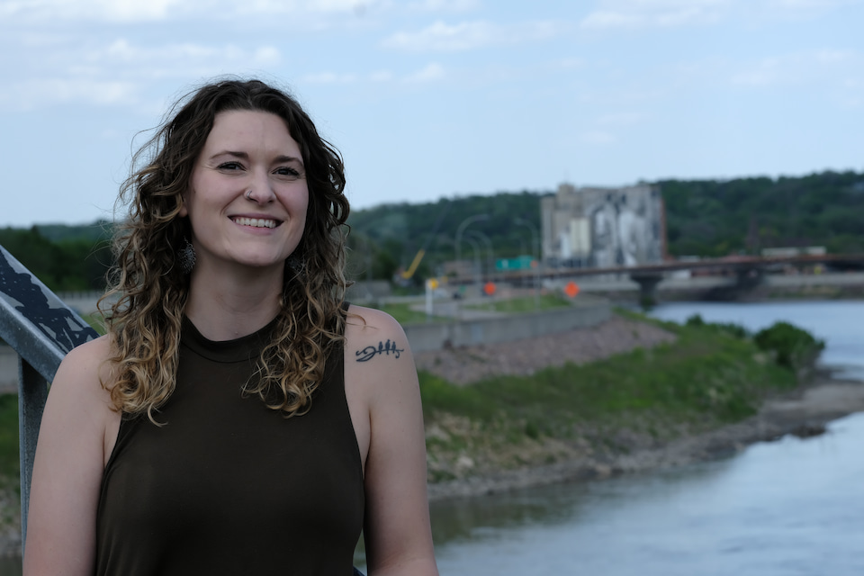
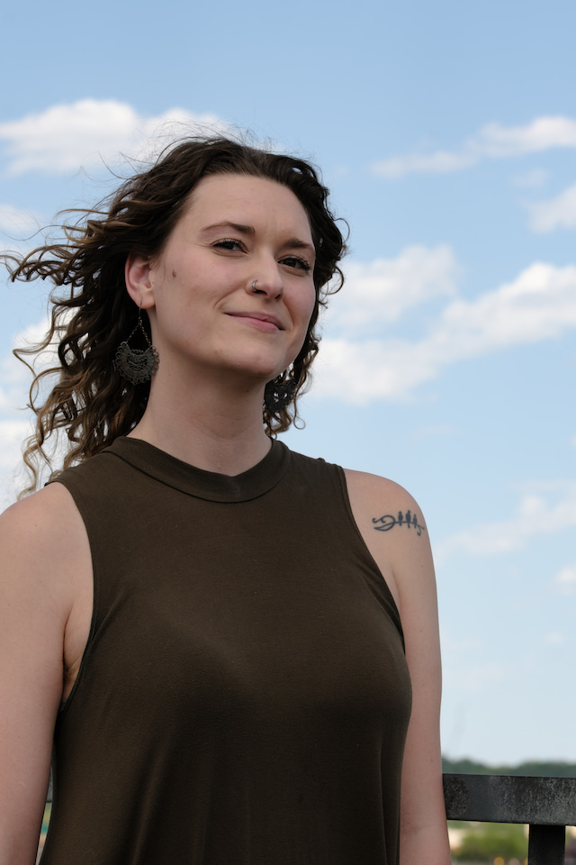

Julia is a progressive, passionate, and present leader who cares deeply about building a community where everyone can live a life of dignity, respect, and freedom.
Julia is running for Mayor of Mankato because she’s frustrated with the status quo. She understands the experience of everyday Mankatoans and thinks our local government could be doing better by our community members.
Who is Julia?
Julia is a proud Mankato “townie” through and through. As a lifelong Mankato resident, Julia is committed to giving back to the community that has nurtured her.
Julia is running for Mayor to change the conversation at City Council - to center the conversation around the real-life experiences of people in our town. As a social worker, renter, queer woman, survivor of gender-based violence, millennial, and auntie, she understands the challenges many people in Mankato face and believes everyone should be heard and respected - especially those too often left out of decision making.
Early Life
Julia’s sense of justice and passion for helping others was instilled in her from childhood. Her mom was a career public defender and her dad, a jack of all trades, always helped his neighbors and gave back to his community. Julia’s first volunteer experience was at age nine helping her dad serve meals to unhoused people from a food truck. She knew then that her life would be about making a difference in the lives of others and working for what’s right.
In 2016, Julia earned a Bachelor’s Degree in Social Work from MSU, Mankato where she was an Honors student and Presidential Scholar. Julia has worked in the social services field for 10+ years, and early on spent a year as an AmeriCorps Volunteer. In her career, Julia has worked with adults with disabilities, children and youth, those struggling with substance addiction, and victims of domestic and sexual violence. She is currently a programming director in the anti-violence field. Outside of work, Julia volunteers with other nonprofits, attends local community events, and is active in mutual aid networks. Julia consistently shows up for her community, and will continue to show up for the people of this community as Mayor of Mankato.
Core Values
Julia’s guiding values include equity, accountability, transparency, dignity, justice, freedom, growth, and community.
Julia is a nurturer, helper, thinker, and activator. She thinks and feels deeply, and knows when to take action and make things happen, especially for the betterment of this community.
Inspiration for Running for Mayor
Julia has always been a change maker, but has deepened her activism and political participation since the murder of George Floyd and the ICE occupation of Minnesota.
As Julia has engaged with local politics, she was disappointed in elected officials’ responses to local issues that she cared about. She didn't see her progressive values represented.
Julia wants our town to have conversations about important topics. She is ready for the city to act boldly, be willing to try new things, and incorporate diverse perspectives. She understands the importance of local policy making and how everyday citizens can make a big impact.
"I’ve heard a lot about what’s NOT possible and I’m ready to start a new conversation."
- Julia
If you’re ready for CHANGE and for our city to start some new conversations, vote for Julia!
Starting New Conversations
As mayor, Julia knows she can’t singlehandedly change city policy overnight, but she can promise to show up, ask hard questions, bring new ideas to the table, and challenge the status quo.
Julia wants to start new conversations about issues our town cares about.
Environmental Justice and Sustainability
Julia understands it is our responsibility as humans to care for our environment and to be proactive about safeguarding our climate for future generations.
Julia wants to bring new conversations to the city council about how we can sustain a healthy future for Mankato by examining how proposed developments, like data centers, might impact our environment. She wants to explore what steps we can take locally to be resilient in the face of climate change. Julia is inspired by cities who prioritize the environment through climate change impact plans, and policies that de-incentivize harmful practices, such as a plastic bag tax. If it can happen in other cities, why not Mankato?
Community input and transparency
Julia wants to ensure that citizens are listened to and that city government remains transparent and accountable to the community.
She hopes to create more opportunities for open dialogue between the City Council and Mankato residents by exploring new ways to gather feedback from citizens, especially from those most impacted by decisions and voices often left out of conversations. She wants to increase transparency in the council’s decision-making processes and ensure that the council is responsive and respectful to feedback and ideas from their constituents.
Reimagining Public Safety OR Community-Led Safety
Julia believes that safety for citizens goes far beyond law enforcement and emergency services.
Community safety is achieved through a strong social safety network where citizens have access to resources beyond police intervention. When people have access to safe housing, financial stability, and community support systems that help prevent crises before they happen, communities thrive. Julia supports strengthening partnerships with local social service organizations and reviewing the city’s ordinances that criminalize homelessness.
Affordability and tenants rights
Julia understands that Mankato citizens are experiencing serious financial strain and the gap between the richest and most impoverished individuals is growing.
Julia plans to re-examine how the city defines affordable housing and invests in the creation of more affordable units. She is also committed to ensuring fair and just rental practices. She’s interested in exploring ways city policy can support businesses in paying living wage.
Julia’s other stances
This is me being silly but it’s late and I’m silly and I just watched this come up in an episode of Parks and Rec and it made me giggle
- Pro backyard chickens
- Pro community gardens
- Pro privacy in the age of AI and surveillance technology
- Pro neighbors knowing each other’s names
- Pro public libraries
- Pro public art
- Pro planting more trees
- Pro mutual aid
- Pro technology that serves people, not tracks them
- Pro affordable childcare
- Pro renters rights
- Pro belonging
- Pro mental health resources
- Pro inclusive public spaces
- Pro humane responses to homelessness
- Pro walkable cities
- Pro dignity for everyone

Volunteer
Join the campaign team to help with outreach, events, and voter engagement.